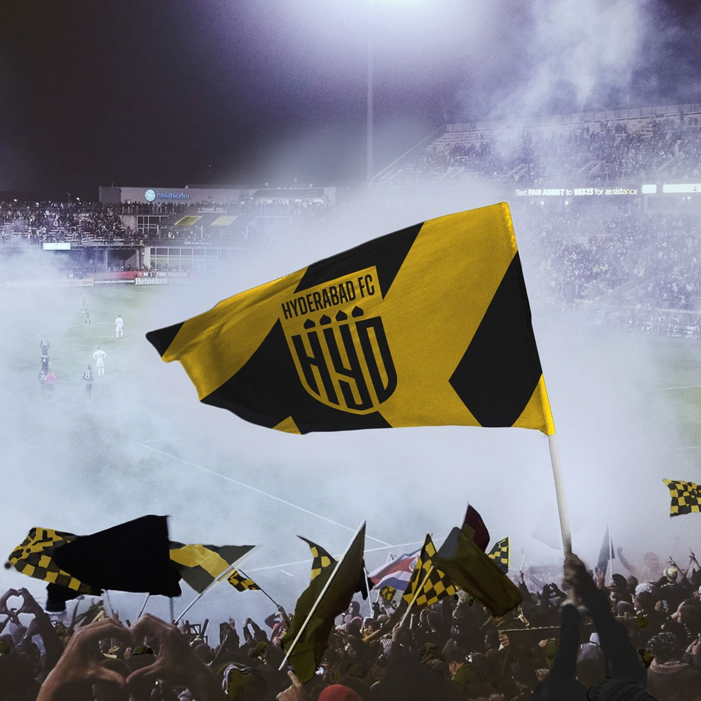
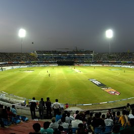
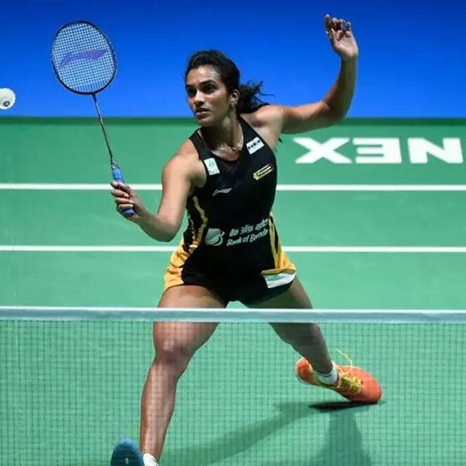
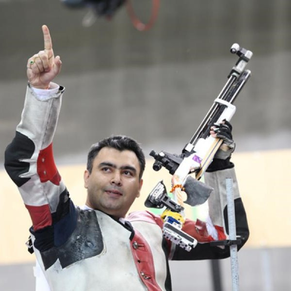
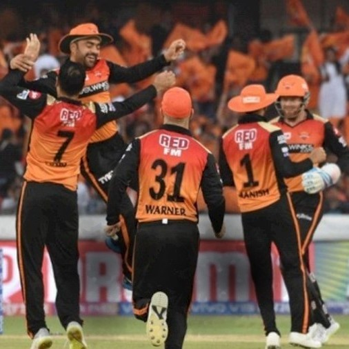
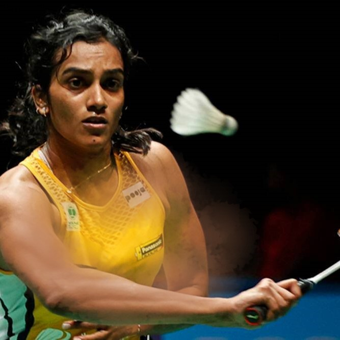

SPORTS IN HYDERABAD
Experience the nostalgia, competition and adrenaline rush of Hyderabad's sports culture.

Football
Visit the G.M.C Balayogi Athletic Stadium, the home ground of Hyderabad FC - the team representing Hyderabad in the Indian super league

Cricket
The famous Rajiv Gandhi international stadium, home to Sunrisers Hyderabad is a sight to behold, always packed on matchday.

Badminton
Don't miss the Puella Gopichand badminton academy, a facility which trains several stars like PV sindhu and Saina Nehwal

Shooting
For the shooting fans, the best place to go is the Gun for Glory shooting academy, started by the medal winning Gagan Narang

IPL 2021 postponed indefinitely

PV Sindhu only indian women singles player to have qualified for Tokyo 2020